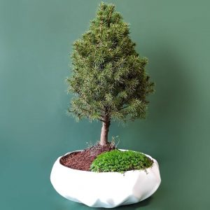
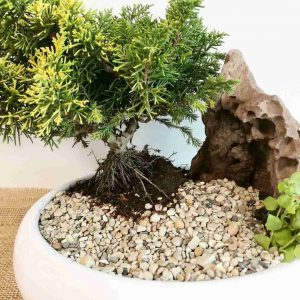
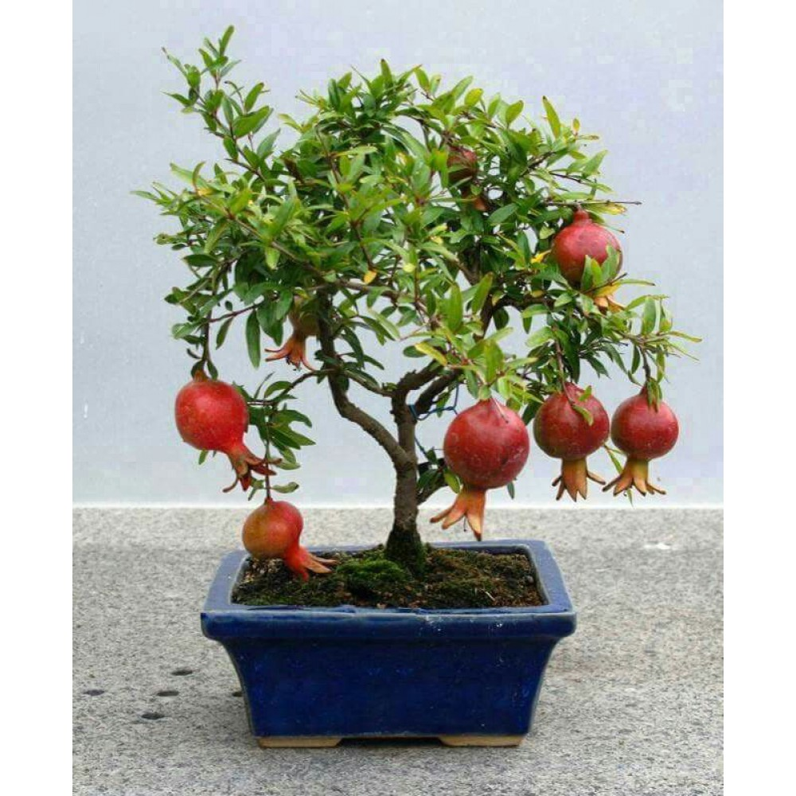
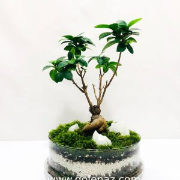
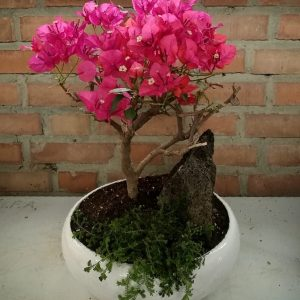

| بونسای کاج دم روباهی |  | قیمت | 190 هزار تومان |
فقط 150 هزار توماان |
|---|---|---|
جنس گلدان :سرامیکی |
||
| ارتفاع درختچه بونسای 40 تا 45 سانتی متر | ||
| ابعاد گلدان: قطر ۳۰ سانتی متر و ارتفاع ۱۱ سانتی متر | ||
بونسای کاج نوئل یا همان کاج کونیکا درختچه ای همیشه سبز، کند رشد بسیار زیبا و دارای برگهایی بشکل سوزن های کوتاه می باشد که به حالت کروی و مخروطی با نظم خاصی در کنار یکدیگر قرار گرفته اند و مانند کوه سبز دیده می شود. این گیاه نماد صلح، خوبی ها و عمر طولانی است. این بن سای مناسب جهت دکوراسیون فضاهای نورگیر داخل و خارج از منزل می باشید و همچنین هدیه مناسب و زیبا برای کسانی که دوستشان دارید.
بومی: کانادا
نام علمی: Picea glauca Conica
اسم های دیگر: نوئل کانادایی، کاج کله قندی، کاج کونیکا، کاج کریسمس
نور:
کاج نوئل گیاهی نور دوست است و به چهار ساعت آفتاب کامل در روز نیاز دارد.
بهتریم مکان برای نگه داری این بونسای کنار پنجره جنوی یا تراس و پاسو هست
آبیاری:
این گیاه به آبیاری کم نیاز دارد.
(سطح خاک در بین دو آبیاری خشک شود) حجم آب آبیاری طوری باشد که کل خاک گلدان کاملا خیس شود و بطور روزانه برگها اسپری آب شوند.
دما:
مانند اکثر کاج ها به سرما مقاوم است ولی درکل به خاطر مناطق بومی خود طالب هوای خنک و رطوبت بالا میباشند. دمای مطلوب آن ترجیحا بین ۲۰ تا ۳۰ درجه سانتیگراد است.
رطوبت:
رطوبت و سرما را دوست دارد.
تغذیه:
زمان کوددهی در بهار سالانه از کود آهن و اسیدی استفاده شود.
رطوبت:
هفتهاي يكبار در زمستان و هفتهاي دوبار در تابستان احتياج به غبار پاشي با آبفشان دارد.
خاک مناسب:
در هر نوع بافت خاک اعم از شنی ،رسی،لومی به شرط زهکشی خوب وعدم خفگی خاک قادر به زندگی است ولی ازنظر واکنش ،خاک های خنثی تا اسیدی را ترجیح میدهد. بهترین خاک برای این بنسای مخلوطی از خاک سبک باغچه، کمپوست و کود است.
هرس:
هرس کردن شاخه های خشک برای پر شدن و شاخه زایی بیشتر توصیه می شود. زمان هرس شاخ و برگ ها در بهار پیش از جوانهزنی است.زمان تعویض گلدان و هرس ریشه هم دو الی سه سال یکبار در بهار.
|  |  |  |  |
| بونسای کاج دم روباهی | بونسای انار مینیاتوری | تراریوم جینسینگ | گل کاغذی |
|---|---|---|---|
| قیمت 150 هزار تومان | قیمت 170 هزار تومان | قیمت 180 هزار تومان | قیمت 250 هزار تومان |
تمام حقوق مادی و معنوی این وب سایت متعلق به سایت نیما است©2022 ((تمرین))